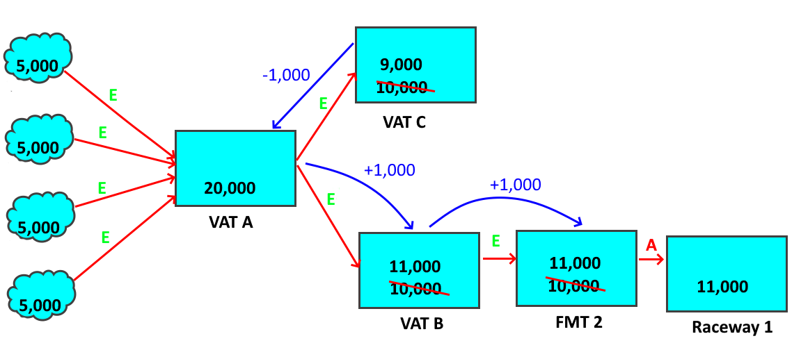
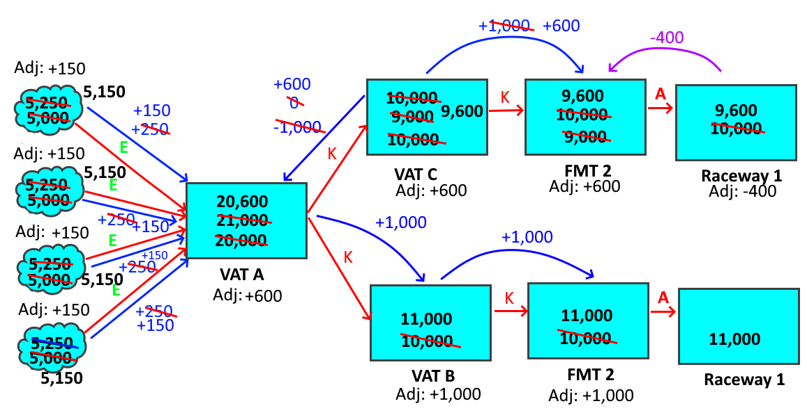

Hatchery Information System
Perhaps the single most important measure in a fish hatchery is the number of fish in any location. On the face of it, this is just an inventory management problem, but it is made more complicated because of the nature of the counts. Counting the fish may happen repeatedly, often using different methods, and each method can have a significantly different error associated with it. For this reason, while the number is important to know, the accuracy of the number can change over time as new information is received.
The number of fish in a hatchery is used for a variety of different purposes. At spawning, the number of eggs can determine how the fish will end up being ponded, as well as providing a measure of adult fecundity. During rearing, knowing the number of fish determines the amount of feed needed, as well as allowing an accurate calculation of feed conversion rates. At the time of release, knowing the number on hand is usually important in determining where fish should be released, and how many can go to each location. Finally, over the whole rearing cycle, some hatcheries will want to know things like the survival rate, which can give some information into hatchery operations and the robustness of different stocks. The importance of the number, coupled with the different means for counting fish, has implications for how the counts are managed.
For hatcheries that spawn fish, the first count is usually an egg count. There are at least two common methods of counting eggs, each with it’s own limitations. The simplest means of counting eggs is by seeing how much water the eggs displace. If the number of eggs per unit volume is known, displacement can give a fairly accurate count of the egg numbers. Of course, if the eggs are not uniform in size, or the size is above or below average for that species, then the count can be quite inaccurate. A more accurate count might be obtained by a machine count, such as an optical counter. If correctly calibrated and properly operated, a machine count can be very accurate. Any number of factors can degrade this accuracy, though, such as faulty equipment, incorrect calibration, and accident. Overall, egg counts are good enough for most purposes, but most hatchery personnel I have spoken with about the subject, feel that the counts could be off by up to 10%, without surprising them.
The second count that some hatcheries perform would be fish marking. Of course, not all hatcheries mark their fish, or they don’t mark all the fish in a rearing unit, so not all hatcheries have fish marking counts, but when fish marking occurs, the counts can be the most accurate available. Automated fish marking trailers tend to have redundant counting systems that can have errors of well under 0.1%. Similarly accurate machine counts are also possible outside of fish marking, but these are infrequently used in hatchery systems, as any such handling will add stress to the fish for minimal gain.
The final count available to fish hatcheries is upon release. Counts at release could be machine counts when loading containers, or when removing fish from a rearing unit, but perhaps the most common would be a simple weight measurement of the fish being released, which is usually accomplished using displacement. For example, when loading fish on a truck for transport to a release site, it is common for the truck to have a depth gauge. Reading the change in the depth can be used to measure the volume, and thus the weight, of fish being released. If the average weight of the fish is known, then the number of fish can be readily calculated. There are several sources of error in such displacement counts. Error can come from the precision of the depth gauge, the consistency in size of the fish, and so forth. However, some comparisons to fish marking counts suggest that a displacement count could have an error as low as 1-2%.
Of the three counts, marking counts can be the most accurate, but are least likely to be available. Egg counts are the most likely to be available, but since other sources of error can creep into the count over time, egg counts are the least likely to be accurate by the time of release. From an accounting perspective, what is most important is that only one count is used as the basis for all calculations.
Ideally, the most accurate count is used for hatchery data management, and switching from a less accurate count to a more accurate count is possible, but for most hatchery data management, it matters less how accurate a count is than that the same count be used as the basis for all calculations. For example, survival is calculated by dividing the number of fish at the time of release by the number of eggs that produced those fish. The denominator in that equation is some measure of the egg number, which could be based off of the egg count. If the numerator is also based off the egg count, then it doesn’t make much difference how accurate the egg count is. After all, the error will be added equally to the numerator and denominator such that the error in the survival estimate resulting from the error in the egg count, will end up being too small to matter. For example, if the egg count was 100,000, and the count was 10% low, then there were actually 110,000 eggs. If the release number was 90,000, then that would mean a 90% survival rate would be calculated, but the actual release number was 100,000, and the true survival rate would be 91%. Thus, even a 10% error in the egg count, which would be on the extreme end of errors in that count, would only shift survival estimates slightly.
Other uses of the egg count with such a high error would have worse results, though. For example, calculating the conversion of pounds of fish food into pounds of fish is an important economic consideration. A large error in the number of fish being fed would result in a large error in the conversion rate. This may be detected by experienced hatchery personnel when one group of fish appears to be either using food far more efficiently, or far less efficiently, than they are expected to.
There are a couple reasons why a hatchery might want to switch from one count to another. They might be marking all their fish and want to use that more accurate count. They might have seen suspicious feed conversion rates that suggest the number of fish is wrong. They might also simply doubt the numbers due to years of experience. Switching counts is not a bad thing, especially if the count in use is suspect. However, if the count is switched, then it must be switched throughout. Back calculation must be performed to change the initial counts such that their basis is the new count being used. If one count is used early on, and a second count is used at a later date, calculations in growth, feed conversion, and survival will simply be wrong. They may or may not be less accurate, but they will be mathematically incorrect.
Egg to release survival is calculated by the equation:
1 ) Survival % = Nr/Ne * 100 Where: Nr = Number of fish released. Ne = Number of eggs. 2) Ne – Nr = Mt Where: Mt = Mortality Total, or the total loss of fish from egg to release. 3) Nm – Mpm = Nr Where: Nm = Number of fish at marking. Mpm = Mortality from marking to release. 4) Mt = Mpm + Mam Where: Mam = Mortality from egg to fish marking.
Now that all the variables and simple equations have been set up, let us adjust some of the equations and do some substitution:
Nm – Mpm = Nr (#3) Mpm = MT -Mam (restating #4) So: Nm – (MT – Mam) = Nr Or: Nm – MT + Mam = Nr Or: Nm + Mam = Nr + MT
But #2 shows that:
Ne = Nr + MT
Therefore:
Ne = Nm + Mam
In other words, the number of eggs used in equation #1, which is the calculation of egg to release survival, is not the egg count, but rather, is the number at marking (Nm) plus the mortality that occurred between the egg count and marking (Mam). Using the egg count to calculate egg to release survival, rather than using the correct number of eggs, will result in an incorrect egg to release survival calculation.
This proof is based on using the count at fish marking as the basis of the release number, but the same proof can be made using any other count. What the proof shows is that one count must form the basis of all calculations using fish numbers, or else any calculation that compares numbers at different times will include the sum of the errors around the various counts, which will result in an incorrect number.
The Hatchery Information System is based on the Move Web design found in the Fish Business Object model. Move Webs can have any count as their basis, and can switch counts at any time, but all numbers in any single move web model will be based off of one count. A Move Web will start out with the egg count, if that is available, will switch to the marking count if that becomes available, and will only use the release count if nothing better is available.
The objectives of the Move Web model were to use the most accurate count available at all times, to improve the accuracy as new information is received, and to not lose any information in the process. The model follows a series of rules as to what data is preferred and how counts change as new information is received. The result is a model that handles uncertainty well. The model assumes it has the right numbers, but can switch to better numbers as new information arrives. All calculations are the best possible with the data available.
Interestingly, the rules used by the Move Web are just an extension on simple accounting. The differences from conventional accounting practices are that numbers in a fish hatchery are not precisely known and the numbers in any rearing unit cannot reach zero unless the user indicates that the rearing unit has been emptied. This results in the rules surrounding the flow of numbers, a few of which will be shown in a series of examples.
Consider a vat (Vat A) that has 20,000 fish in it that is then split out to two different vats (Vats B and C), each receiving half the fish.
Each of the receiving vats has 10,000 fish. There is no good way for these numbers to have been arrived at, as there is no good way to reliably extract half of the fish from the source vat. The hatchery staff might have simply estimated what was half, or they might have estimated the total weight of fish in the vat (based on 20,000 fish times the average weight of the fish at that time) and removed half that weight. Either of these methods is likely to be less accurate than the original count of fish. A fish counter might have been used, which would result in a more accurate count, but those are rare and problematic, so that is unlikely. The result is that the confidence in the numbers of the two vats is clearly less than the confidence in the original 20,000, but the confidence in the sum of the two vats is the same as the confidence in the original 20,000.
Next, imagine that the fish from Vat B are moved into a fish marking trailer, and when all the fish are marked, the highly accurate machine count shows that 11,000 fish were marked out to the raceway.
To have removed 11,000 from Vat B, there must have been 11,000 in the vat, not 10,000 as originally estimated. Where did those extra fish come from? One possibility is that there weren’t 20,000 fish in Vat A, but 22,000, so that when Vat A was split in half, there were 11,000 that got moved, not 10,000. But that is not the most likely scenario, as it would mean that the original count of 20,000 was off by 10%, when confidence in the size of the moves into Vat B and Vat C is low.
A second possibility is that there were 21,000 fish in Vat A, and that the split wasn’t all that accurate. This is more reasonable, as it would mean a smaller adjustment to the 20,000, but it is not the most reasonable answer. After all, it would still mean adjusting the 20,000, and there is still more confidence in the 20,000 than in the moves to Vats B and C.
The best answer is that the moves to Vat B and C were not all that accurate, and that 11,000 were moved to Vat B, with only 9,000 having been moved to Vat C.
This answer is the best one because it retains the 20,000 and is the most plausible. After all, the fish moved into Vat C weren’t even estimated. What was moved into Vat C was “all the rest” after the fish moved into Vat B were subtracted, so only the estimated number moved into Vat B was actually wrong.
So, what happens here is a matter of number flow. The moves to Vats B and C have a confidence level of “estimated”. In the Move Web model, an estimated move can be freely adjusted by the model to make the numbers work out. This is correct, because there was little confidence in those moves, so for them to be off by some amount is likely. The fish that are moved out of the fish marking trailer have a confidence of “actual”, because counts out of fish marking trailers are the most accurate counts possible and become the official counts if they are available. The fish marking trailer only had 10,000 fish in it, though, so it has to come up with an extra 1,000 fish. This is where the flow happens.
The fish marking trailer asks all the moves in for more fish. Since there is only one move in, that move gets the request. Had there been several moves in, then the request would be asked of each of the moves proportionally. For example, had there been a move in of 4,000 and a second of 6,000, then the first move would be asked for 400 more fish, while the second was asked for 600. This would retain the relative size of the moves, if not their numbers. Since there was only the one move in, it is asked for the full 1,000 fish.
The move in also has a confidence of estimated, as there is no reason for there to be any more confidence in the size of that move than there was in the number in the source. Thus, when the move is asked for 1,000 more fish, it simply passes that request on to it’s source.
When the source gets the request for an extra 1,000, it can’t comply, as it is empty, so it passes the request on to all moves in, of which there is only one. That move in is the move from Vat A to Vat B, and is estimated, so the move just passes the request back to Vat A. Moves always pass requests to their other end, so long as they have other ends to pass to.
When Vat A gets the request for 1,000 fish, it has several options.
Vat A has four moves in and the move to Vat C. All of these moves have an estimated confidence, but they are not all equal. If Vat A requested fish from the moves in, that would mean that there were more than 20,000 fish in Vat A at the time of the move to Vat B. That could happen, but it would mean changing the initial count, which is a last resort for the Move Web model. The most likely error was that the move to Vat B was wrong, which means that the move to Vat C would also be wrong. Therefore, according to the rules used by the model, the request is then pushed to the move out to Vat C because that is the most likely to be wrong.
When Vat C gets the request, it has 10,000 fish in it. The vat can easily spare 1,000, so it adjusts it’s number down to 9,000 and relinquishes the extra 1,000.
Thus, the move to Vat C is adjusted down by 1,000, the move to Vat B is adjusted up by 1,000, and the move from Vat B to the marking trailer is also adjusted up by 1,000. All is well. The books balance completely, the number in Vat A was retained, and the only change was to the most unreliable count in the model.
However, no information was lost by the model, either. When the moves were adjusted, an adjustment number was written for them. The move from Vat A to Vat C is now only 9,000, but it retains a memory that it was 10,000. If the mark number was edited down, such that less than 1,000 was needed, then Vat C will move back towards the original 10,000. The same steps would be followed, too, as the trailer would push the change back up the chain and it would end with Vat C moving back towards it’s original number. This will be shown later on.
Now, consider what happens if Vat C is also moved into a fish marking trailer, and when the fish are marked out, the count is found to be 10,000.
The same initial steps are followed. The trailer asks for an extra 1,000 fish, Vat C can’t supply it, so it asks for an extra 1,000 from Vat A, up to that point, this is the same as the preceding example, but at this point things change.
Vat A still has the four moves in and the move out to Vat B, but if Vat A were to push the request to Vat B, Vat B would push the request to the fish marking trailer, and the move out of the fish marking trailer has “actual” confidence, or type A. The Move Web cannot change moves with confidence actual on its own. Only the user can change those. Therefore, the request would be rejected. The Move Web simplifies the search by changing the confidence of the move from Vat A to Vat B to type K (the reason for this letter is not worth explaining). A move of type K can only be adjusted from downstream to upstream. In other words, Vat B can ask Vat A to change the value, but Vat A can’t ask Vat B to change the value. This allows edits to be made in Vat B or the fish marking, as any edit would mean that Vat B would ask Vat A to resolve the request, but Vat A won’t even bother asking the move to Vat B to help with a request.
Type K is a one way gate. There is also type S, which is a one way gate in the other direction, but the use of that one is not going to be covered in this already lengthy example. Type S only applies to moves made after fish marking.
So, when Vat C requests an extra 1,000 fish of Vat A, Vat A knows it can’t push the request onto Vat B, so the only remaining option is to ask more fish of the moves in. This will change the 20,000 number, but at this point, we know it must change. There were 21,000 fish taken out of the vat, so there must have been 21,000 fish in the vat. Vat A takes the 1,000 fish request and divides it up for the four moves in. If each is 5,000 fish, then each is asked to supply an extra 200 fish. In the Move Web shown, those moves in are moves from nowhere. Moves from nowhere can supply any number of fish, because the number is just a count, and the reliability of that count can’t be known. Therefore, the moves increase by 250 fish each, and all is well. Of course, those moves add an adjustment of 250. That means that, to get the original count, it is only necessary to add the adjustment number to the move number.
In this picture, the adjustment is shown as +250, because the new number is 250 fish larger than the original number, but in the Move Web, it would actually be -250 such that adding the adjustment to the current number would return the original number. The adjustment works mathematically, but not so well visually.
At the end of that last example, all the fish had been marked into a pair of raceways, and the total had been recounted and found to be 21,000 fish. The initial counts had been changed from 20,000, and adjustments had been written to each move. Now consider what happens when somebody realized they were mistaken, and only 9,600 fish had been marked out of Vat C. Since that move is type actual, only the user can fix this mistake, but that is how edits work anyways. Users find and fix errors.
When the user edits the move out of the fish marking trailer, the number is edited from 10,000 down to 9,600, which means that the fish marking trailer has to give back 400 fish. The fish marking trailer only has one move it can give the fish to, which is the single move into the trailer. That move has been changed from type estimated to type K, but type K allows adjustments upstream, so the move takes the request for 400 fish and passes it to Vat C. Since Vat C is empty, it has to pass the request to it’s moves in, of which there is only the move from Vat A. That move is also type K, so it can handle the request, and passes it to Vat A.
Vat A now has to decide what to do with the request. It could look at all of the moves in and out, just as it did with the earlier request of 1,000 fish, but there is something else to consider at this point. All the moves have adjustments. The move to Vat B is type K and can’t accept any adjustments from the upstream end, but it also has an adjustment of -1000. In other words, it would prefer to lose fish to move closer to it’s original number, not gain fish and move further away. In this case, the move is type K, and can’t do either one, but this request would not be desirable. On the other hand, the four moves in all have adjustments of -250 fish (adding -250 to their number of 5,250 would return to the original count of 5,000). If the request is pushed to them, they move back closer to the original count. Moving back towards the original count is always better, as it means that the Move Web is making better use of the information it has. Therefore, even if there were moves out that could take the request, the fact that the four moves in would really like to be reduced, means that those moves should get this request. The request is then divided proportionally to each of the four, which means that each goes to 5,150. The adjustment also gets 100 added to it, so the adjustment goes from -250 to -150. Once again, adding the adjustment back in will return the original count.
The adjustments in the picture reflect how the numbers moved away from their original numbers, which is not always how the adjustment is stored in the Move Web. In the Move Web, the original number can always be obtained by adding the adjustment back to the number in the move.
The preceding examples show how new information flows through the Move Web model to keep the numbers consistent while preferentially adjusting the most suspect counts and without losing any information. The numbers moving into the model equal the numbers moving out of the model plus any fish still in the model. All moves are adjusted as needed so that everything adds up. Of course, this isn’t always possible, but the model will detect when an adjustment has nowhere to go, and will then reject the requested change.
There are several more rules than the few demonstrated in the examples. In fact, there are a few less than two dozen total rules for how numbers flow. In all cases, the design is based on thinking about what makes the most sense and codifying it into a rule. We know that, “grabbing a few nets full of fish” is going to result in a less accurate count than using a fish or egg counter. We also know that fish can’t be spontaneously created, nor do they leave the system unless the user indicates that they did so. The numbers must add up, so when a discrepancy arises, that means that some count was wrong. It remains only to identify which count is the least reliable, and see whether adjusting that count solves the problem.
The rules were built up by thinking up possible scenarios and thinking through where the error is most likely to occur. So long as the Move Web can follow the rules and adjust the numbers to make everything add up right, it will do so automatically. Only moves of type “actual” are not candidates for adjustment, while types K and S are only adjustable in one direction. Moves of type “actual” are moves out of a fish counting system like a fish marking trailer, mortalities (as they are assumed to be counted with reasonably good accuracy), and some releases or transfers. The Move Web design was used to help with the rules. A series of contrived webs were created and adjusted in a series of reasonable and unreasonable ways, while looking to see when numbers didn’t add up, or the outcome was not plausible. Any errors were then studied further, usually resulting in a new rule covering a rare edge case.
The bottom line with all the accounting rules used is that the end result has to be the most reasonable explanation for when counts don’t agree. The number of fish moved into the model has to equal the number of fish moved out, plus any still in the model. The number of fish in any rearing unit can’t be adjusted such that they drop to zero, or even to a point where any person would be able to easily count the remaining fish in the rearing unit. And if everything adds up, with no rearing unit dropping too far, the end result, whatever it is, remains as the most plausible explanation of how the numbers work. That’s the best that the Move Web model can do, and it is almost always going to be sufficient. For any scenario beyond that, the user must get involved to edit some number that was entered earlier, because otherwise the numbers simply do not add up.